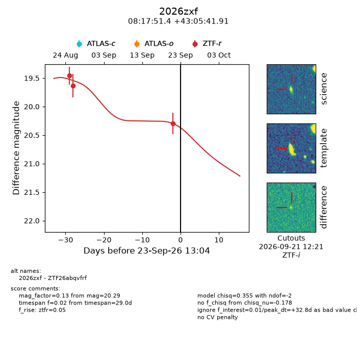
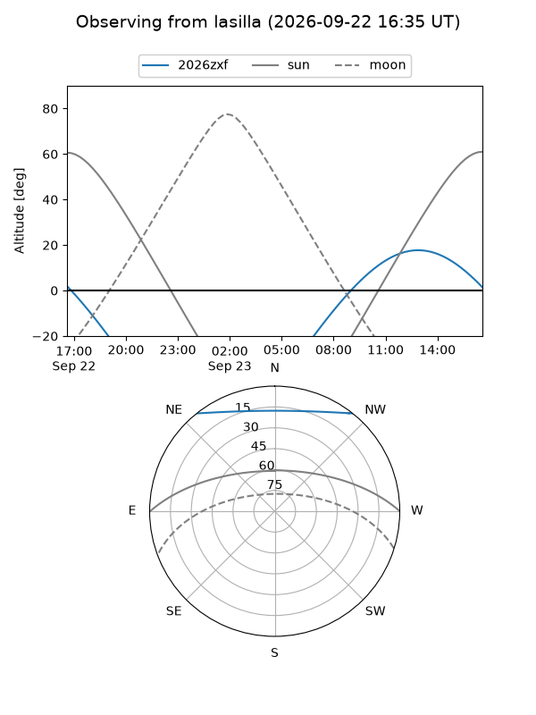
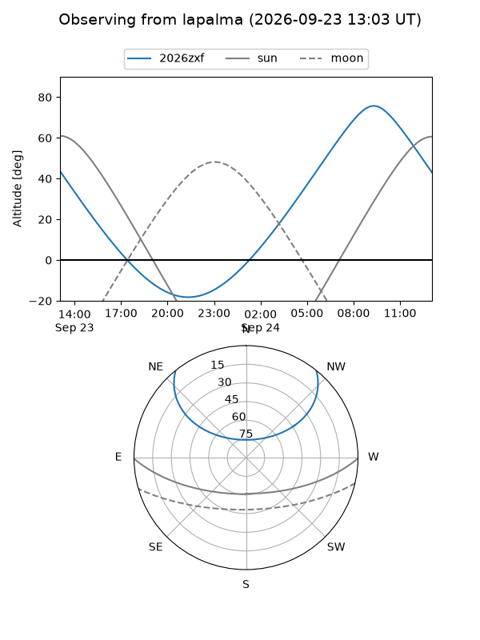
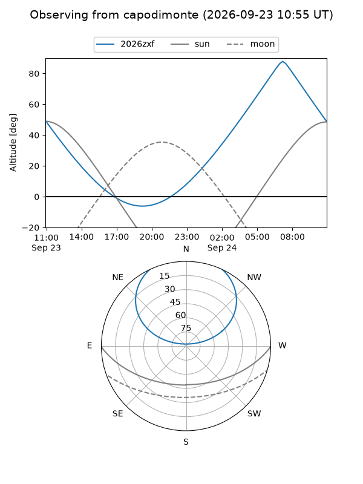
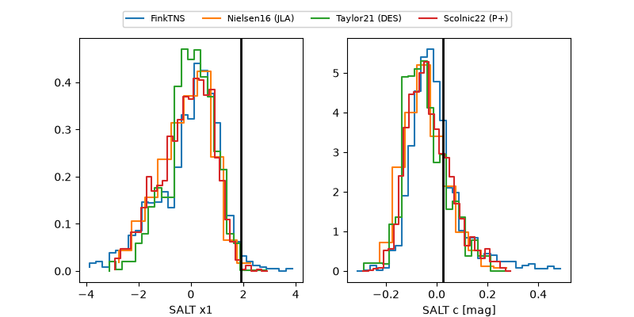

2026zxf
Target 2026zxf at 2026-09-23 13:06
Aliases and brokers:
FINK-ZTF: ztf.fink-portal.org/ZTF26abqvfrf
Lasair-ZTF: lasair-ztf.lsst.ac.uk/objects/ZTF26abqvfrf
ALeRCE-ZTF: alerce.online/object/ZTF26abqvfrf
YSE-PZ: ziggy.ucolick.org/yse/transient_detail/2026zxf
TNS name: wis-tns.org/object/2026zxf
Direct TNS query: direct search
alt names
ZTF26abqvfrf (ztf,fink_ztf)
2026zxf (tns,yse)
Coordinates:
equatorial (ra, dec) = 124.4642,+43.09497
equatorial (HMS+DMS) = 08:17:51.42,+43:05:41.91
galactic (l, b) = (177.3660,+33.42349)
Flags:
TNS type: nan
peak dt: +32.8
Photometry:
last ztfr=20.29
3 ztfr detections
Lightcurve

Visibility



Additional plots
